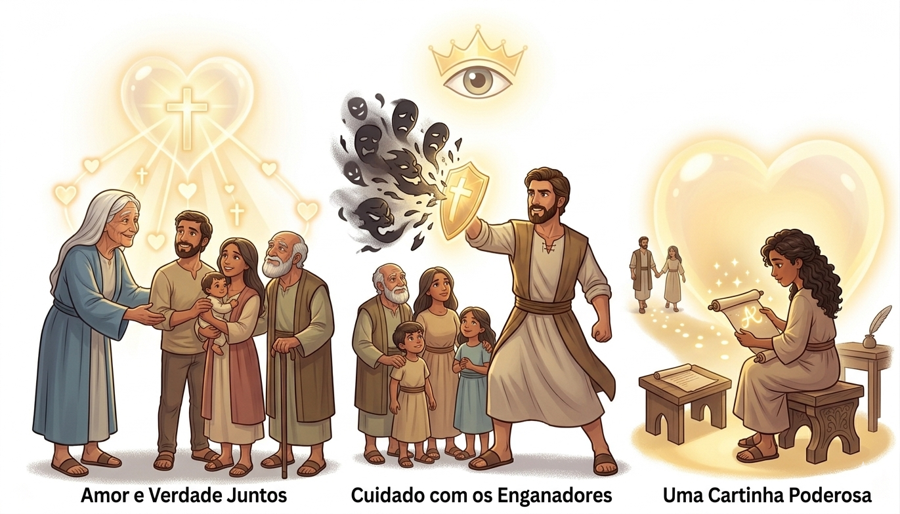
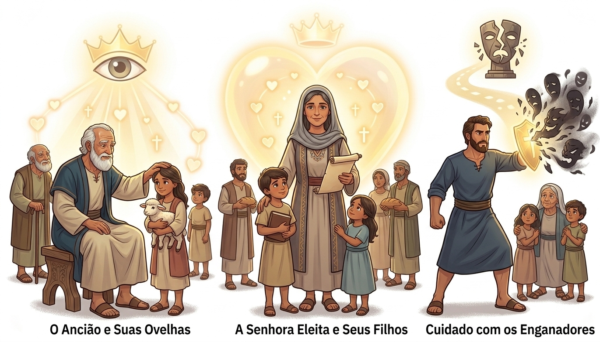
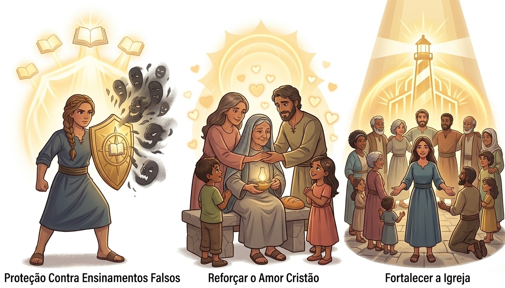

Verdade e Amor em Uma Carta — Um Resumo Visual para Crianças
Andar na verdade é o caminho a seguir,
Mas sem amor, não podemos prosseguir.
João nos ensina com sabedoria e cor:
Verdade sem amor não tem valor!
📖 "Amados, não vos escrevo mandamento novo, mas o mandamento antigo... que nos amemos uns aos outros." (2 João 1:5)
Muitos por aí vão tentar confundir,
Com palavras bonitas para nos iludir.
Mas João nos alerta: "Fiquem de olho!"
Protejam a fé como um tesouro de ouro!
📖 "Muitos enganadores saíram pelo mundo... Acautelai-vos, para que não percais o fruto do vosso trabalho." (2 João 1:7-8)
Apenas treze versículos, tão pequenina,
Mas cheia de força, sabedoria divina!
Às vezes, poucas palavras são o bastante,
Para transmitir um amor gigante!
📖 "Muito tenho que escrever-vos; todavia, não quis fazê-lo com papel e tinta... espero ir ter convosco." (2 João 1:12)
"E este é o amor: que andemos segundo os seus mandamentos."
— 2 João 1:6
💌 O que isso significa? João une duas coisas que parecem separadas: amor e obediência. Quando amamos a Deus de verdade, queremos seguir o que Ele ensina — não por obrigação, mas porque é nosso caminho de vida! Amar é andar junto com Deus.

O discípulo amado de Jesus, agora mais velho e sábio, escreve com carinho e cuidado pastoral. Ele se chama simplesmente de "o ancião" — um líder respeitado que cuida de suas ovelhas!
📖 2 Jo 1:1 — "O ancião, à senhora eleita e a seus filhos, os quais eu amo na verdade."
Pode ser uma mulher cristã especial com sua família, ou uma igreja inteira! João os chama de "eleitos" — escolhidos por Deus. Que honra ser chamado assim pelo apóstolo do amor!
📖 2 Jo 1:4 — "Alegrei-me sobremaneira por ter achado alguns de teus filhos andando na verdade."
Pessoas que ensinavam coisas erradas sobre Jesus — diziam que Ele não era realmente humano. João alerta seus amigos para terem cuidado e não os acolherem em casa!
📖 2 Jo 1:7 — "Muitos enganadores saíram pelo mundo, os quais não confessam Jesus Cristo como tendo vindo em carne."
João começa sua carta com alegria! Ele ficou muito feliz ao saber que os filhos da senhora estavam andando na verdade. Mas ele lembra: não basta conhecer a verdade — precisamos viver no amor de Jesus!
📖 2 Jo 1:6 — "E este é o amor: que andemos segundo os seus mandamentos."
João avisa sobre pessoas que não ensinavam a verdade sobre Jesus. Ele diz: "Cuidado! Não deixem essas pessoas entrarem em sua casa ou apoiem seus ensinamentos errados!"
📖 2 Jo 1:10 — "Se alguém vier a vós e não trouxer esta doutrina, não o recebais em casa."
A mensagem principal: fiquem firmes no que Jesus ensinou! Quem permanece nessa verdade tem tanto o Pai quanto o Filho — que presente precioso!
📖 2 Jo 1:9 — "Quem permanece na doutrina de Cristo, esse tem tanto o Pai como o Filho."
Hoje em dia, assim como naquela época, existem muitas pessoas ensinando coisas que não são verdadeiras sobre Jesus. 2 João nos ensina a ser sábios e reconhecer a verdade!
📖 2 Jo 1:8 — "Acautelai-vos, para que não percais o fruto do vosso trabalho."
Algumas pessoas são muito amorosas, mas não se importam com a verdade. Outras defendem a verdade, mas sem amor. João nos mostra que precisamos dos dois — sempre juntos!
📖 2 Jo 1:3 — "Graça, misericórdia e paz... serão conosco em verdade e amor."
A carta mostra que os pais têm a responsabilidade de ensinar seus filhos a andar na verdade. A fé começa em casa — e João se alegrou ao ver filhos que seguiam esse caminho!
📖 2 Jo 1:4 — "Alegrei-me sobremaneira por ter achado alguns de teus filhos andando na verdade."
João queria garantir que seus amigos cristãos não fossem enganados por falsos mestres. Ele os ensinou a reconhecer e rejeitar ensinamentos errados sobre Jesus — a maior proteção é conhecer a verdade!
📖 2 Jo 1:7 — "Quem assim procede é o enganador e o anticristo."
Mesmo alertando sobre perigos, João não esquece o mais importante: o amor! Ele lembra que amar uns aos outros é um mandamento antigo, mas que deve ser vivido a cada dia com força renovada.
📖 2 Jo 1:5 — "Peço-te... que nos amemos uns aos outros. Este é o mandamento que ouvistes desde o princípio."
Ao escrever para a "senhora eleita", João fortalece toda a comunidade cristã, ensinando-os a permanecer firmes na fé e unidos no amor — que bela imagem da Igreja!
📖 2 Jo 1:9 — "Quem permanece na doutrina de Cristo, esse tem tanto o Pai como o Filho."

2 João tem apenas 13 versículos! É uma das cartas mais curtas de toda a Bíblia — você pode ler tudo em menos de 3 minutos! Mas não deixe o tamanho enganar: cada frase está cheia de verdade e amor.
Diferente de outras cartas da Bíblia, 2 João foi escrita para uma família ou comunidade específica — como uma mensagem de WhatsApp da época! João escreve com muito carinho e diz ao final que prefere visitar pessoalmente a escrever tudo pelo papel.
João escreveu 5 livros do Novo Testamento: o Evangelho de João, as cartas 1, 2 e 3 João, e o Apocalipse! E o tema central de todos é o mesmo: Jesus, o amor e a vida eterna.
João diz que verdade e amor precisam andar juntos. Você já viu alguém dizer uma coisa verdadeira de um jeito sem amor? Como a mesma verdade poderia ser dita com mais carinho?
2 Jo 1:9 diz que quem permanece na doutrina de Cristo tem a Deus. Como você pode saber se um ensinamento é verdadeiro ou falso? O que você usaria para comparar?
João ficou muito alegre ao saber que os filhos da senhora estavam "andando na verdade" (v.4). O que significa "andar na verdade" na sua vida diária, em casa e na escola?
Escreva 2 Jo 1:6 em um papel e cole no seu espelho ou caderno. Releia toda manhã esta semana. Pense: como posso andar no amor e na verdade hoje?
Assim como João escreveu com amor, escreva uma mensagem curta para alguém da sua família ou amigo dizendo o quanto você os ama. Pode ser no papel, numa mensagem ou num bilhetinho!
Quando alguém na escola disser algo errado sobre Jesus ou sobre a fé, pense: como João responderia? Peça a Deus coragem para ficar firme — com gentileza e com a verdade!
© 2025 - Trilho Kids
Desenvolvido com ❤️ para crianças